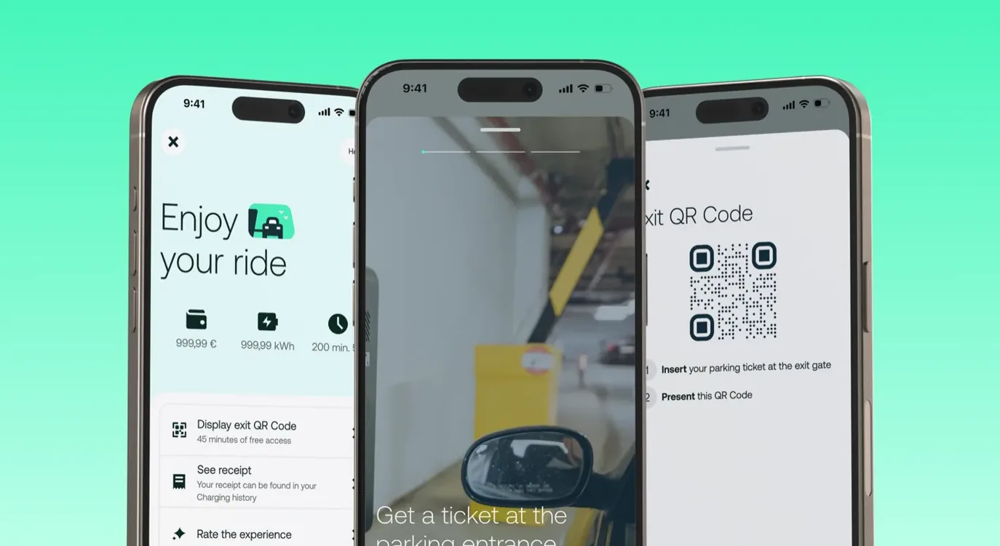
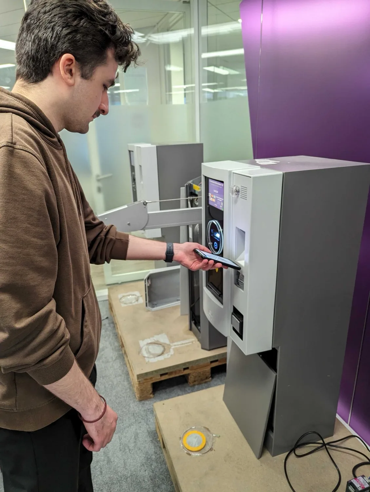
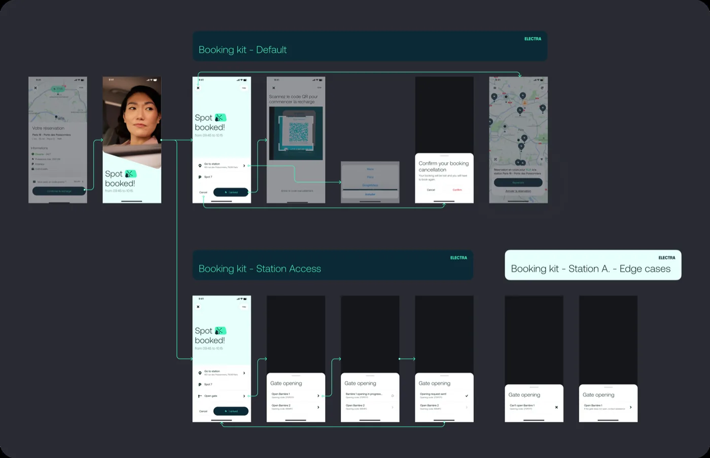
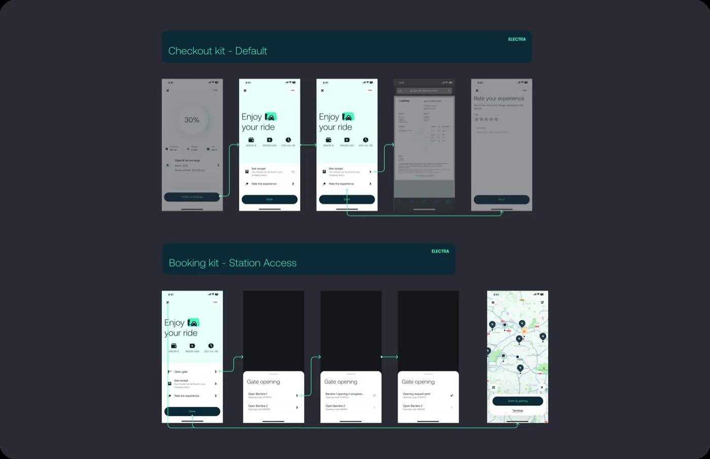
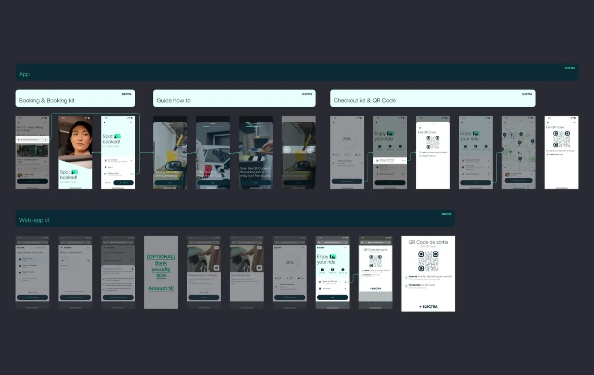

Parking
Access
Faire sortir un conducteur d'un parking souterrain payant sans qu'il paie, et sans installer le moindre matériel supplémentaire.
- Entreprise
- Electra
- Durée
- 4 mois
- Rôle
- Product Designer — seul designer de la squad Charge XP
- Périmètre
- Entretiens · Tests utilisateurs · Maquettes · UX & UI
- Environnement
- Mobile · App · B2C
Une remise que personne ne voyait
Certaines bornes Electra sont installées dans des parkings souterrains payants. Pour compenser ce coût, Electra prend le ticket à sa charge. Le mécanisme existait — mais il était invisible, et il fuyait.
Deux contraintes cadraient tout : les exploitants de parkings voulaient s'impliquer le moins possible — attirer les conducteurs, c'est le métier d'Electra, pas le leur — et en sous-sol, il n'y a souvent aucun réseau mobile.

Deux fuites, un angle mort
En creusant avec l'équipe data sur Metabase, un chiffre a recadré tout le projet :
- Aucun moyen fiable de confirmer qu'une personne rechargeait vraiment si elle contournait l'app — elle pouvait se brancher directement.
- Une faille permettait d'entrer gratuitement via la web-app sans jamais recharger.
- Payer à la borne de sortie était vécu comme une trahison : les utilisateurs pensaient que le service couvrait ça.
Se concentrer sur les utilisateurs de l'app. Leur session est traçable en temps réel, ce qui ferme la faille — et transforme la fonctionnalité en argument pour utiliser l'app plutôt que de se brancher à la volée.
Un après-midi en station
J'ai rencontré trois groupes : les propriétaires de parkings, leurs prestataires PMS, et les conducteurs. Avec mon PM, j'ai passé un après-midi en station à mener des entretiens et à confronter le concept à de vrais utilisateurs.
La position des exploitants était nette : centraliser toutes les interactions via leur PMS, et ne pas les impliquer. Celle des conducteurs était encore plus simple — ils ne voulaient pas avoir à penser au parking.
Ce qui est ressorti de cet après-midi n'était pas une demande de fonctionnalité. C'était une contrainte : ce qu'on construirait devait être invisible pour l'exploitant et irréfléchi pour le conducteur.

Pourquoi un QR code
Nous avons exploré la reconnaissance de plaque, un second ticket imprimé, et des badges physiques. Le QR code l'a emporté sur un seul argument : le conducteur s'arrête déjà à une barrière pour prendre ou scanner quelque chose. Le geste existe — il suffisait de changer ce qu'on y scanne.
Scanner un QR code à une barrière n'était pas un comportement répandu en 2024. Le poids du design est donc allé sur la réassurance, pas sur le parcours lui-même — celui-ci était déjà familier.
Le nouveau parcours s'insère dans l'existant sans le perturber. Tout reste identique, sauf qu'à la fin de la recharge l'utilisateur reçoit un QR code qui ouvre la barrière de sortie. Aucun paiement. Il remplace le second ticket qu'une borne aurait normalement délivré.
Deux kits réutilisables
Le projet est tombé pendant le rebranding de l'app : j'ai donc conçu pour la réutilisation plutôt que pour cette seule fonctionnalité. Trois pages Figma : Booking Kit, Checkout Kit, et le parcours complet.


Les deux kits partagent un seul gabarit. Le booking indique où aller et à quoi s'attendre ; le checkout réutilise exactement le même cadre pour afficher durée, coût et reçu. Réutiliser le gabarit, c'est n'apprendre l'écran qu'une fois.
Le QR code est envoyé par SMS en plus de la notification in-app. Si le réseau tombe en sous-sol — et c'est le cas — le code est déjà sur le téléphone.

Sur de vraies machines, avec de vrais utilisateurs
Avec mon PM, je suis allé dans les locaux du partenaire tester l'écran QR sur leurs scanners réels, à plusieurs tailles, pour garantir la lisibilité. J'ai ensuite recruté des testeurs via un pop-up in-app ciblé uniquement sur les utilisateurs passés par ces stations, puis un questionnaire pour garder un panel varié.
Hors quelques confusions mineures de copy, les testeurs ont compris la fonctionnalité et ce qu'on attendait d'eux. Ils ont apprécié le QR code justement parce qu'il collait à un comportement qu'ils avaient déjà.
Livré, et réutilisable
L'utilisateur sort d'un parking payant sans payer et sans y penser. La faille est fermée, les exploitants n'ont rien eu à installer, et les deux kits ont ensuite servi à des écrans bien au-delà de cette fonctionnalité.
Rendre le checkout plus intelligent : faire apparaître le QR code automatiquement à la fermeture de l'écran, et permettre son ajout au wallet. La sortie est le seul moment où l'utilisateur ne doit rien avoir à chercher.